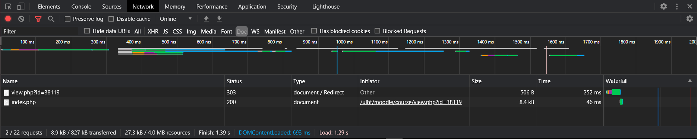
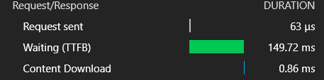

Nesta imagem conseguimos observar que:
Depois de o click no hyperlink, fomos redirecionados para o moodle da Universidade
E foram descarregados 2 ficheiros do tipo php
Em que obtivemos 63 microsegundos de request e 149.72 ms de espera
Já os tempos de descarga foram no total 298 ms.
Na preview consegui observar que um dos ficheiros falhou a carregar e o outro ficheiro foi carregado com sucesso, neste caso o login do moodle da Universidade
Nos headers consegui observar que o ficheiro que falhou a carregar tem 4 abas que podemos expandir sendo elas:
Já o ficheiro que foi carregado com sucesso consegui observar apenas as 3 primeiras abas da lista anterior
Já no Timing consegui observar as seguintes informações para o ficheiro que foi carregado com sucesso:
Já no ficheiro que não foi carregado consegui observar tudo o que mencionei anteriormente (com tempos diferentes) mas com a excessão que o "Connection Start" tinha mais subcomponentes
Connection Start